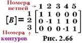

2.10.1.3. Контурная матрица
Контурная [ В ] матрица (рис. 2.66) представляет собой таблицу, строки которой соответствуют независимым контурам kн = В - ( У - 1) цепи, а столбцы - её ветвям (см. рис. 2.64, б ). Элементы матрицы имеют следующие значения: если контур j содержит ветвь k и направление обхода контура совпадает с направлением ветви, то элемент матрицы имеет значение +1; если контур j содержит ветвь k и направление обхода контура противоположно направлению ветви, то элемент матрицы имеет значение -1; если же контур j не содержит ветвь k , то элемент матрицы имеет нулевое значение.
|
|